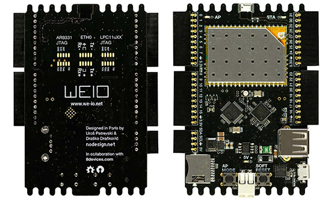
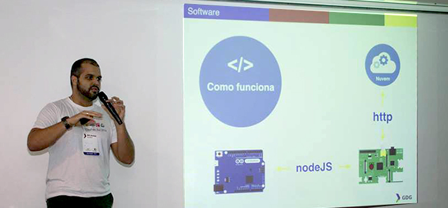
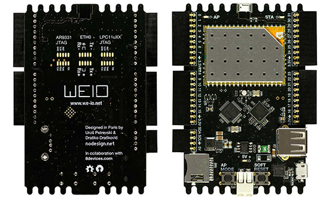
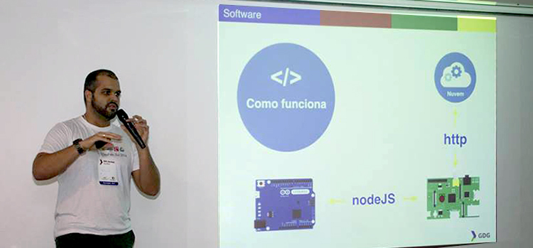
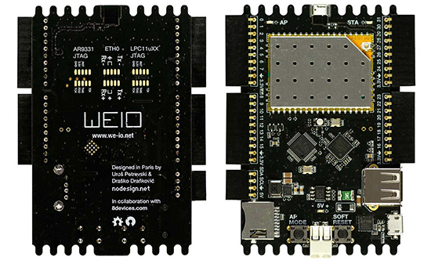
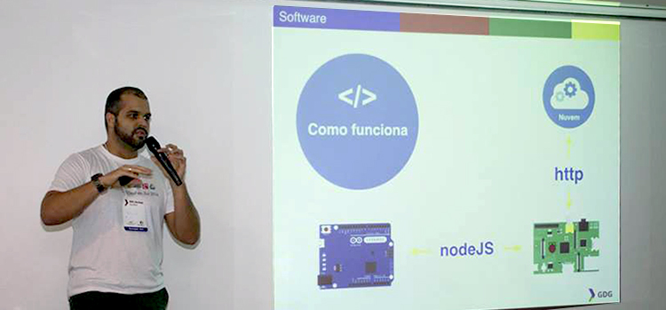

Blog 4/2/2015 Desenvolvendo Wearables com JS - Campus Party 2015 24/9/2014 Curso de desenvolvimento de aplicações em Node.js para Internet das Coisas 27/8/2014 Programação não é um bicho de 7 megabits 25/8/2014 WeIO - O Hardware para a Web of Things  23/8/2014 Internet of Things com Node.JS - Google Developer Groups - DevFest Sul  5/8/2014 Configurando Flask com UWSGI e Nginx 25/7/2014 Internet of Things com NodeJS - Campus Party Recife 2014 8/7/2014 Instalando Node.js latest na Raspberry Pi 31/5/2014 Internet of Things com Node.js - 1º IoT Day 25/5/2014 Introdução ao JavaScript 10/5/2014 Introdução ao Node.js 30/4/2014 Internet of Things com Node.js 11/4/2014 Prototipando Aplicativos com HTML5, CSS3 e JavaScript 8/4/2014 Rodando Ubuntu na Beaglebone Black 29/3/2014 Arduino com Node.js 28/3/2014 HTML5 & CSS3 31/1/2014 WebApps com AngularJS e MongoDB 2/10/2013 WebApps com AngularJS

 


